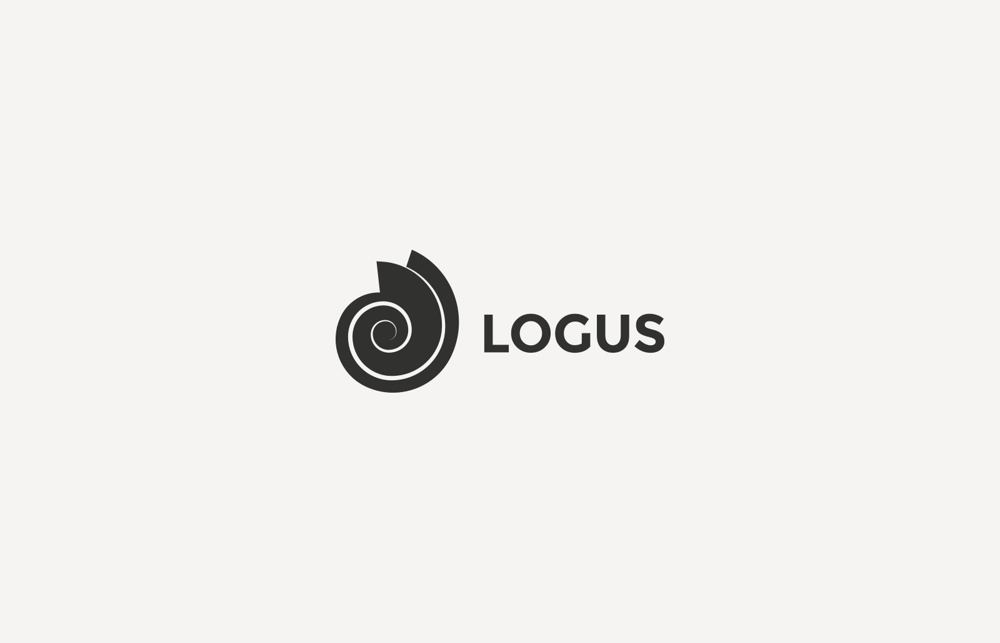
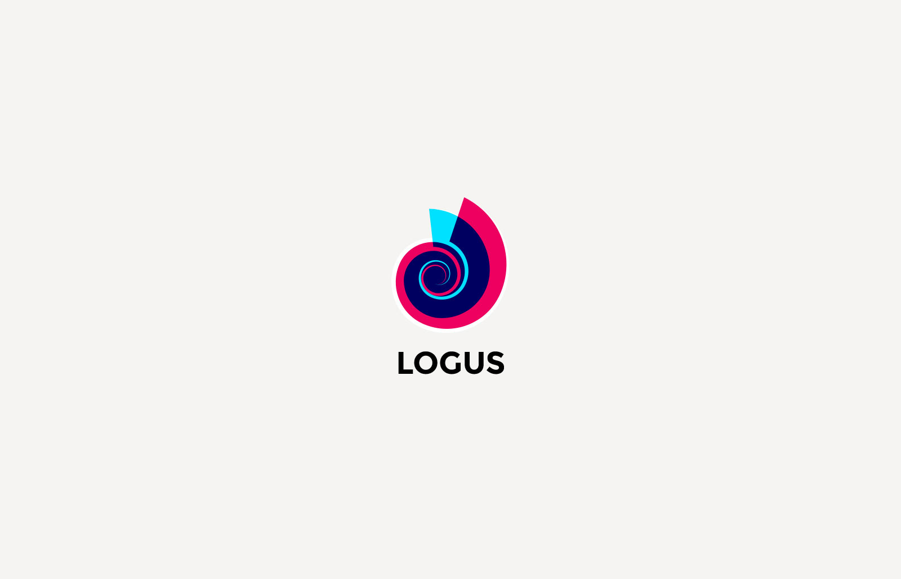
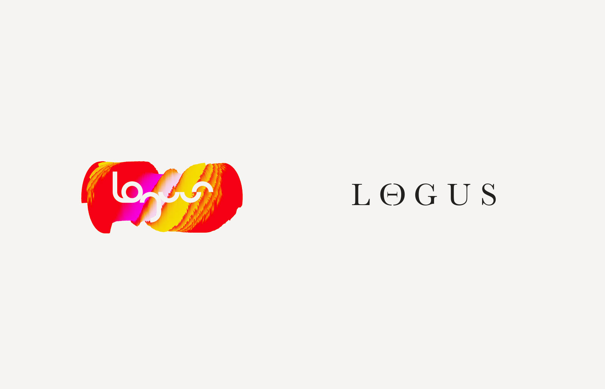
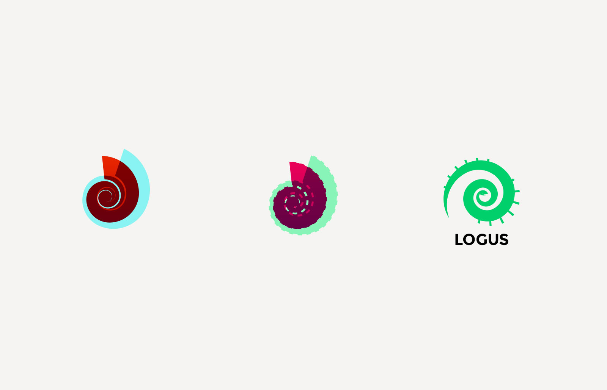
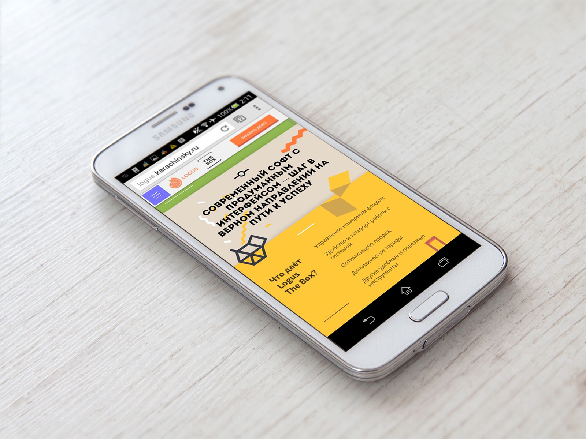

4 февраля 2015
Логотип Logus
Слово клиенту:
«Автору концепции бренда понравилась форма ракушки спиральной —
можно задействовать интересную форму, стилизовать и заюзать как элемент логотипа»
Аммониты (лат. Ammonoidea) — вымерший подкласс головоногих моллюсков.
Свое название аммониты получили в честь древнеегипетского божества Амона со спиральными рогами.
Источник — Википедия.

Цветная версия
Процесс создания
Поиск формы и цвета
Уже после утверждения логотипа, я предложил клиенту еще сильнее упростить форму и насытить её содержание — спираль аммонита можно использовать в качестве маски для любой иллюстрации. При этом форма остается неизменно узнаваемой. [Любимая] версия на темном фоне
[Любимая] версия на темном фоне

Сайт Logus The Box
Одностраничный лэндинг для системы управления отельным бизнесом.
Решенные задачи: дизайн, разработка, мультиязычность
Сроки: 2 недели

Главная и единственная страница — на манер современных максимально информативных лэндингов.

Libra Hospitality (Logus — один из дочерних брендов)
Мы закончили с Александром уже два сайта-одностраничника. Наши партнёры попросили контакты дизайнера, а клиенты звонят с фразой «классный сайт». Всё хорошо, работаем дальше.
Норм? Зато букв впервые мало :)